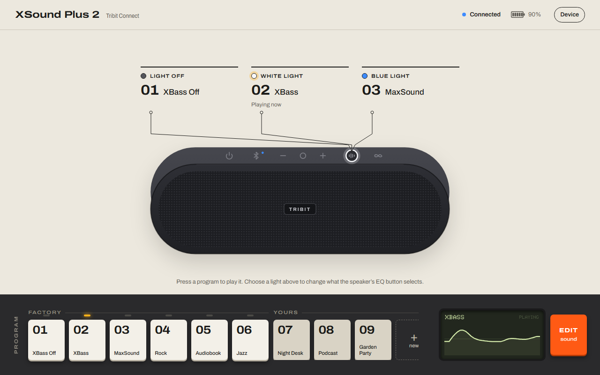
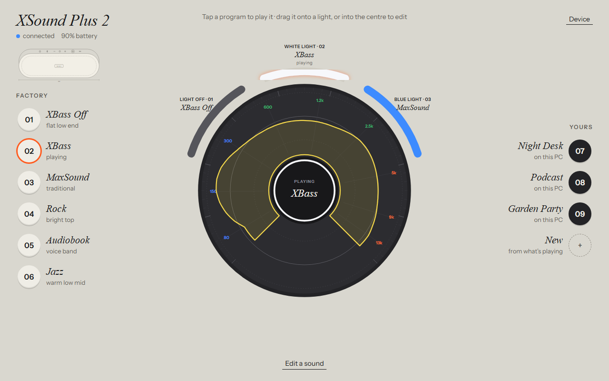
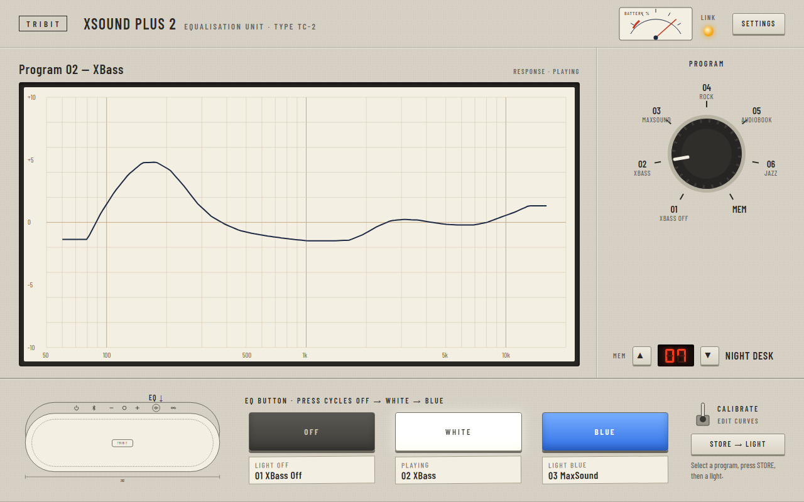

Each prototype runs on the real profile model and a simulated speaker. Programs play, lights can be reassigned, and profiles can be edited and saved. Press ` inside a prototype for the mock speaker’s controls. The critique and comparison are in design/CONCEPTS.md.

The speaker is the centrepiece. Callouts from its EQ button show what each light selects, above a numbered program bank. EDIT unfolds a fader surface.

One circular object: the EQ button at the centre, the response drawn around it in polar form, and the lights as outer arcs. Programs are tokens you drop on them.

A 1970s measuring instrument: a chart-recorder trace, a rotary program selector, a 7-segment memory register, and lamp buttons with paper labels.